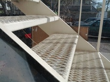
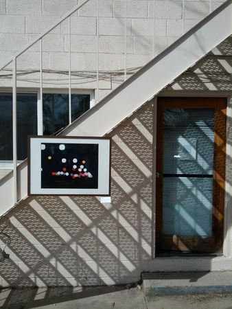
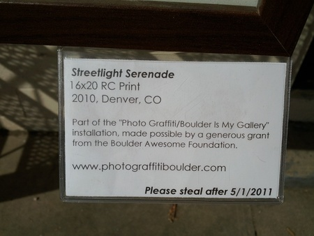

We noticed something odd out the back window today.

Ara immediately knew what it was. An investigation confirmed it:

Andrew Kurcan's Photo Graffiti/Boulder Is My Gallery project found dojo4. Our little box of magic just got hit with a brilliant adornment.

It will (probably) be on display until 5/1. If you come by some afternoon with a box of wine, we'll have ourselves a gallery opening!
Thanks Andrew. It's an honor.